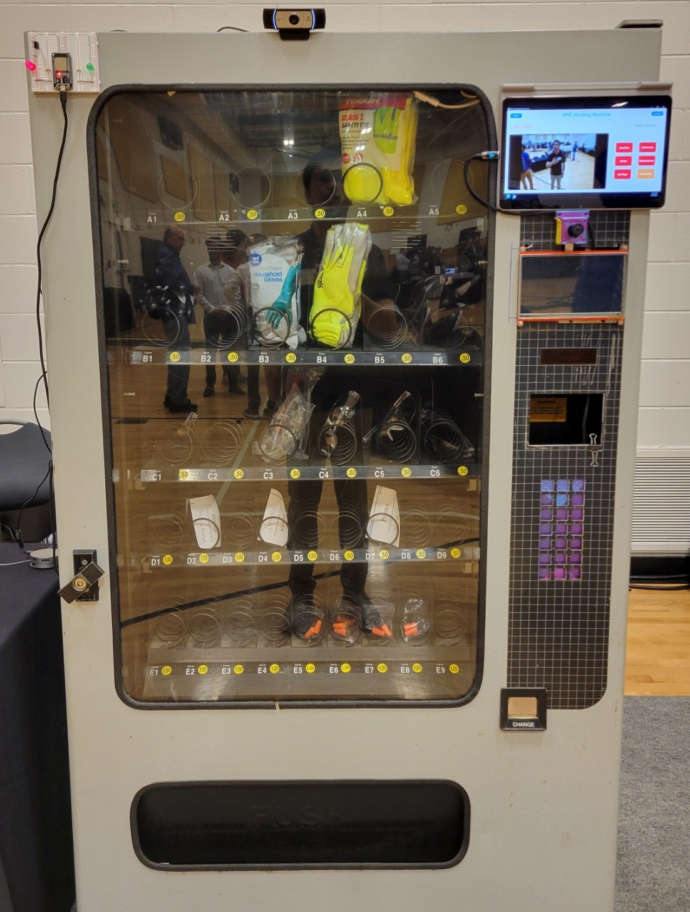

PPE A.I. Vending Machine
Senior Capstone Project

Intelligent vending machine system utilizing AI camera technology to detect PPE compliance and automatically dispense missing Personal Protective Equipment to workers (users). This project addresses workplace safety by ensuring proper protective equipment usage through computer vision technology.
Key Features
- Real-time PPE detection using YOLO object detection algorithm
- Automated dispensing system
- User-friendly GUI built with PySide6 for operator interface
- Nvidia Jetson Orin Nano used for edge AI processing
- Database logging for compliance tracking and reporting
Technical Implementation
- Trained custom YOLO model on PPE dataset
- Implemented Python-based control system for hardware integration
- Custom implementation of off the shelf hardware to interface with an exisiting snacks vending machine.
Project Link
Computer Vision
YOLO
Python
PySide6
Nvidia Jetson Orin Nano
OpenCV
Hardware Integration
Networking Systems
Educational Robotics
Research ProjectEducational robotics program designed to engage K-12 students in STEM learning through hands-on robotics experiences. Includes custom hardware design, manufacturing, and curriculum development.
Educational Impact
- Designed and fabricated over 100 STEM-education robotic kits
- Developed standards-based curriculum for 2-week robotics programs
- Created age-appropriate learning materials for different grade levels
Technical Components
- Custom PCB design for educational microcontroller boards
- Improved hardware design for ease of use and manufacturability
- Laser cut in place components for student assembly
- EMG circuit to control the robot arm based on the Microchip platform
- ROS-based software framework for advanced students
Project Link
HIRoLab
ROS
Arduino
Laser Cutting
PCB Design
Curriculum Design
Manufacturing